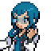
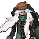

Mable
- Report your claims: she counts each one, and you keep the stone.
- Your first report: Z-Power Ring, Normalium Z and 10 Z-Shards.
- At 23 she runs her tests, then calls you about the legend rifts.
Everything the free update adds, and how to find it. The map half of the guide pins every rift; this half is the rules. Story spoilers stay folded until you open them.
Already past Tradewind on an older save? Hit Continue and you'll hear a rumour: something tore open in the corridor north of Tradewind Town. Fly there and walk north to see it.
To Mega Evolve your own Pokémon you need the Mega Ring, from Madam Tsuji at the Lantern Gym in Tradewind (see Mega Stones outside the rifts).
A rift is a copy of a map you already know, with the colour drained out and no people. Pokémon keep their colour, so they stand out against the gray. Somewhere on the map is a rogue Mega.
Every morning at 8:00, each free slot gets a new rift (up to three open at once), on a random spot you've already visited, never two on the same spot. A rift nobody enters stays open until it collapses; it doesn't expire overnight. No new rifts open while you're inside one.
| Town | Spots | Field guide |
|---|---|---|
| Tradewind Town | 1 | See them on the map |
| National Park | 2 | See them on the map |
| Ashlands | 1 | See them on the map |
| Shin Tokyo | 3 | See them on the map |
A spot only starts getting rifts once you've been to its map. Inside, a rift leads to the drained copy of one of these places, picked at random from the ones you've visited: Route 2, the National Park, Tradewind Town, the Ashlands, Walnut Woods, Star Summit and Shin-Tokyo. The same rift always leads to the same place.
There's no tall-grass battling in a rift: the wild Pokémon stand out in the open, and you walk up to them. Each rift shows up to three groups of up to three, and every group is one species from the same list of 18:
Foongus, Caterpie, Timburr, Diglett, Elekid, Trapinch, Geodude, Hoppip, Magby, Seedot, Munchlax, Torkoal, Cyndaquil, Cottonee, Chikorita, Totodile, Drilbur, Litleo.
While surfing, you can also run into Omanyte, Kabuto, Poliwag, Azurill, Feebas.
They aren't tied to the rift's Mega. Every rift draws from that one list, whichever Mega is inside. Between the two lists, every rogue Mega's line starts somewhere in the rifts, so you can raise your own.
About one rift in five, a member of Team MZ got there first. They stand where the Mega would and battle you for it, with the Mega as their last Pokémon. After the first rift that collapses on you, the next new rift you enter always has a rival. Beat one and they come back to Hotel Z as a partner; they never turn up in a rift again.
| Who | Level |
|---|---|
| The rogue Mega | Your best level, but never below 30, or 45 once you've reached Shin-Tokyo. Perfect IVs. |
| A rival's Mega | 10 under your best level, holding its stone. Their other two: 11 or 12 under. |
| Wild Pokémon | Half your best level, minus 0–2. |
| Your partner's three | 3 under your best level, give or take 2, rolled each battle. |
| Mable's legends | 70. |
"Your best level" is the highest level in your party, or with a partner along, the highest of the first three Pokémon you bring.
On the map a rogue shows as its normal form. In battle it Mega Evolves on the first turn, throws one Z-Move without needing a crystal, and makes a last stand once: the first hit that would knock it out leaves it at 1 HP, then it heals half its HP and glows. It's also hard to catch, so bring good Poké Balls.
| You… | You get |
|---|---|
| Catch it | The Pokémon, holding its Mega Stone. Counts as claimed. |
| Knock it out (first time) | Its Mega Stone, left behind. Counts as claimed. |
| Knock it out (already claimed) | Z-Shards only. |
| Beat the rival holding it | Its Mega Stone if you haven't claimed it, plus 8 Z-Shards. The rival becomes a partner. |
| Lose to the rival | A whiteout: the rift collapses. |
Claims are what Mable counts. Only a stone won or a Mega caught in a rift counts: a stone you buy or find somewhere else doesn't. Once you've claimed all 23, rifts keep coming with rematches, which pay Z-Shards but no stone.
Which Mega waits in a rift is random among the ones you haven't claimed. "Its line in the rifts" is the relative you can find wild inside (see Inside a rift). "Z-Move from" is the move it turns into its Z-Move.
| Rogue Mega | Stone | Its line in the rifts | Z-Move from | Moves |
|---|---|---|---|---|
| Mega Amoonguss | Amoongussite | Foongus | Sludge Bomb | Sludge Bomb, Energy Ball, Earth Power, Foul Play |
| Mega Azumarill | Azumarillite | Azurill Surfing | Liquidation | Liquidation, Play Rough, Superpower, Aqua Jet |
| Mega Butterfree | Butterfrite | Caterpie | Psychic | Bug Buzz, Psychic, Hurricane, Energy Ball |
| Mega Conkeldurr | Conkeldurrite | Timburr | Stone Edge | Drain Punch, Mach Punch, Stone Edge, Knock Off |
| Mega Dugtrio | Dugtrionite | Diglett | Earthquake | Earthquake, Stone Edge, Iron Head, Throat Chop |
| Mega Electivire | Electivirite | Elekid | Wild Charge | Wild Charge, Ice Punch, Cross Chop, Earthquake |
| Mega Flygon | Flygonite | Trapinch | Earthquake | Earthquake, Outrage, Fire Punch, Stone Edge |
| Mega Golem | Golemite | Geodude | Stone Edge | Earthquake, Stone Edge, Heavy Slam, Fire Punch |
| Mega Jumpluff | Jumpluffite | Hoppip | Hurricane | Leaf Storm, Hurricane, Moonblast, Giga Drain |
| Mega Kabutops | Kabutopsite | Kabuto Surfing | X-Scissor | Razor Shell, Stone Edge, X-Scissor, Aqua Jet |
| Mega Magmortar | Magmortarite | Magby | Fire Blast | Fire Blast, Thunderbolt, Focus Blast, Psychic |
| Mega Milotic | Miloticite | Feebas Surfing | Ice Beam | Hydro Pump, Moonblast, Ice Beam, Dragon Pulse |
| Mega Omastar | Omastarite | Omanyte Surfing | Hydro Pump | Rock Blast, Hydro Pump, Ice Beam, Earth Power |
| Mega Poliwrath | Poliwrathite | Poliwag Surfing | Close Combat | Liquidation, Close Combat, Ice Punch, Earthquake |
| Mega Shiftry | Shiftrite | Seedot | Knock Off | Leaf Blade, Knock Off, Low Kick, Rock Slide |
| Mega Snorlax | Snorlaxite | Munchlax | Double-Edge | Double-Edge, Earthquake, Crunch, Heavy Slam |
| Mega Torkoal | Torkoalite | Torkoal | Flash Cannon | Eruption, Flash Cannon, Solar Beam, Earth Power |
| Mega Typhlosion | Typhlosionite | Cyndaquil | Shadow Ball | Eruption, Earth Power, Shadow Ball, Focus Blast |
| Mega Whimsicott | Whimsicottite | Cottonee | Moonblast | Moonblast, Energy Ball, Hurricane, Shadow Ball |
| Mega Meganium | Meganiumite | Chikorita | Solar Beam | Solar Beam, Moonblast, Earth Power, Hyper Voice |
| Mega Feraligatr | Feraligite | Totodile | Dragon Claw | Liquidation, Dragon Claw, Ice Punch, Crunch |
| Mega Excadrill | Excadrite | Drilbur | Iron Head | Earthquake, Iron Head, Rock Slide, X-Scissor |
| Mega Pyroar | Pyroarite | Litleo | Dark Pulse | Fire Blast, Hyper Voice, Dark Pulse, Grass Knot |
Your progress is in the Mega Log: START → LOG → MEGA LOG. It shows all 23 rogues and the six legends; anything you haven't claimed stays a silhouette.
Six rivals can fight beside you: Canari, Lida, Emma, Taunie, Tulip and Jacinthe. Beat one as a rival in a rift and they'll join you from Hotel Z. Lida and Canari are in the lobby from the start; Emma, Taunie, Tulip and Jacinthe check in once you've beaten them. Talk to one to open their partner card and press INVITE. One partner at a time; GO SOLO sends them home.
| Partner | Lv1 | Lv2 | Lv3 | Lv4 |
|---|---|---|---|---|
| Canari | Shiny odds ×1.25 | ×1.5 | ×1.75 | ×2 |
| Emma | Clock 2:30 | 3:00 | 3:30 | 4:00 |
| Taunie | Tells you which Mega is inside | …and any rival | …and whether a wild shiny waits | …and whether the Mega is shiny |
| Lida | Lends Lucario + Lucarionite | Perfect IVs | Steady level: always 3 under | Max EVs |
| Tulip | Lends Gardevoir + Gardevoirite | Perfect IVs | Steady level: always 3 under | Max EVs |
| Jacinthe | Lends Mawile + Mawilite | Perfect IVs | Steady level: always 3 under | Max EVs |
Taunie reads a rift when you touch it. At Lv3 and Lv4 her answer holds for your next trip in. A perk only works with that partner along.
Two Hearts One Rift shows as "??????" in your quest log until you finish it. Ride one rift all the way to its collapse with a partner beside you (clock out, Mega caught or beaten, or rival beaten), without whiting out.
Officially a hotel, unofficially Team MZ's base. You leave by the door you came in. See who stands where.


The partners wait on the sofas. AZ's dog sits by the desk; it gets involved once you've claimed a few Megas (see the Zygarde arc).
Rogue Megas do something no Pokémon should: Mega Evolve and throw a Z-Move in the same battle. Mable gives you the Z-Power Ring at your first report so you can fight back.
| From | Shards |
|---|---|
| A wild Pokémon in a rift, beaten or caught | 1 (shiny: 5) |
| A rogue Mega, first claim | 10 |
| A rogue Mega, rematch | 6 |
| …if it used its Z-Move | +3 |
| A rival | 8 |
| A legend, caught | 20 |
| A Rift Sanctum holdout | 5 |
AZ's desk sells Z-Crystals for 40 Z-Shards each (Snorlium Z: 60). Normalium Z is always there. Every rogue you claim adds the crystals for its types; Snorlium Z arrives with Mega Snorlax. Icium Z and Ghostium Z only appear once all 23 are claimed, when the whole set is in stock. Your partners give one each at friendship Lv3.
Mable's reward for catching Mega Rayquaza. With it, your Mega can turn any damaging move into a Z-Move without a crystal, in any battle. One Z-Move per battle still applies.
Only a catch counts. Knock a legend out and it retreats deeper into the rift, and it turns up again in a later one. Mega Lugia and Mega Ho-Oh keep their stones, Lugianite and Ho-Ohnite, when caught. Legend rifts have no wild Pokémon and no rivals.
After you've beaten the game, a barrier stands in six of the drained maps. Each belongs to one partner: bring them along at friendship Lv4 and they use their ability to open it. With the right partner below Lv4, it stirs but won't give.
| Partner | Ability | Barrier in the drained… | Shadow legend |
|---|---|---|---|
| Canari | Surge | Route 2 | Raikou |
| Lida | Lifeline | National Park | Yveltal |
| Emma | Time Freeze | Tradewind Town | Cresselia |
| Taunie | Rival's Dash | Walnut Woods | Latias |
| Tulip | Illusion Sight | Shin-Tokyo | Darkrai, holding Darkranite: it fights like a rogue Mega |
| Jacinthe | Breakthrough | Ashlands | Regigigas |
Shadow Pokémon you catch here need purifying, like any other.
| Quest | Starts | Done when |
|---|---|---|
| Mega Doomsday | The rift on the corridor into Tradewind | You walk into Hotel Z |
| Two Minutes Is a Long Time | Mable's briefing at Hotel Z | You report all 23 claims to Mable |
| Primal Signatures | Mable's call after her tests | Primal Groudon, Primal Kyogre, Mega Lugia and Mega Ho-Oh are caught |
| Sky-High Mega | Mable's next call | Mega Rayquaza is caught |
| Order in the Rifts | AZ's dog, at Hotel Z | See the Zygarde arc |
| The Long Stay | A call from Emma | See the Zygarde arc |
| ?????? | Secret | See Partners |
A side story about what's draining the gray world. It starts once you've claimed three rogue Megas and hold the Z-Power Ring: walk into Hotel Z. Most of it is spoilers, so it's folded below in the order it happens.
AZ's dog plants itself between you and the door. It's a Zygarde (10% Forme), and you have to battle it; it can't be caught, and the battle repeats until you win. It drops the Odd Pebble, and Order in the Rifts starts.
| What | How |
|---|---|
| Mega Ring | Madam Tsuji, Lantern Gym (Tradewind). Beat Goro, the Lantern Bearer and her Apprentice, then her: the Lantern Badge, the Mega Ring and a Gengarite. |
| The Pawnbroker | Tradewind, after the Lantern Badge: trades a curio from the Curio Merchant for a stone (Houndoominite, Banettite, Sablenite, Absolite, Gardevoirite, Mawilite, Blazikenite). |
| The Minister | Shin-Tokyo, after his own story: the Mega Stone of whatever Pokémon leads your party, 10,000 each, as many as you like. These don't count toward Mable's tally. |
| Lugianite, Ho-Ohnite | Held by Mega Lugia and Mega Ho-Oh in the legend rifts. |
| Deoxysite | Held by the Shadow Deoxys (Lv50) in the Prototype Lab. |
| Haxorite | On the floor in Distortion World 3, if your starter was Axew (and starters weren't randomized). |
Built from the game's own data for v1.3.0. The numbers on this page are the game's; if a patch changes them, this page changes with it.